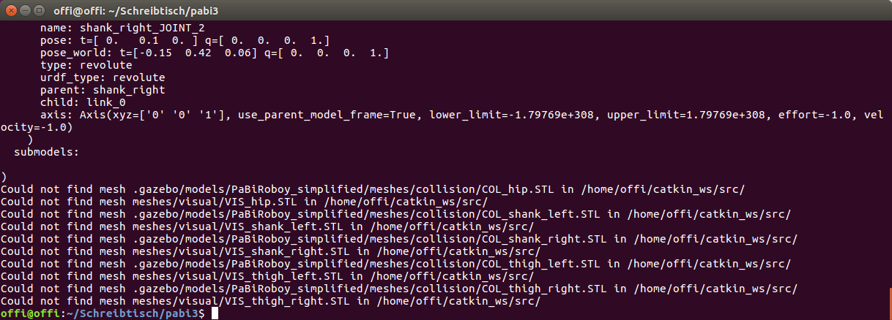

From SDF to URDF
ROS MoveIt! needs the robot model to be described in URDF. This could be a problem for several robot models, as it is not guaranteed to have your robot already converted into URDF, as it was the case for Roboy. This is why I will explain in this chapter how I converted .sdf files into URDF.
Install pysdf
First step is to install pysdf. This is a ROS package, that allows easy conversion from sdf to URDF. Go into your catkin_ws folder and execute following commands:
git clone https://github.com/andreasBihlmaier/pysdfcd ..catkin_makesource ~/catkin_ws/devel/setup.bash
Execute pysdf
- This step is optional, but I recommend to backup your robot's .sdf files.
- Now go into your robot model folder and open a terminal there.
- Execute
rosrun pysdf sdf2urdf.py model.sdf model.urdf, where model.sdf should be the sdf name of your robot. Typically there is also amodel.configin the same directory. The output of the command would be in this casemodel.urdf, but you can also give it another name. - OPTIONAL: If you want to use pysdf without ROS, you can also open the scripts directory of the package. Copy your
model.sdfandmodel.configthere and execute:python sdf2urdf.py model.sdf model.urdf - You will most likely get the warning message
Could not find mesh ..., no matter what method you used. This is completely normal if you are using meshes in your model.  The Error could look like this. - What I did now to solve this issue is that I saved my meshes folder in a package that is known by ROS, e.g.
pabi_ikor the pysdf package, as I did it in my implementation for instance. Just copy your meshes there and edit the path to these meshes in the generated URDF file accordingly. - Last step, but a very important one, is to check your URDF file and edit false values. ROS MoveIt! won't work with your URDF if it contains values that are extremely high. I often figured out, that some values were set to
1.79769e+308. I most likely find them in the line<limit effort="-1.0" lower="-1.79769e+308" upper="1.79769e+308" velocity="-1.0"/>Change them to 0 for instance. I also changed effort and velocity to 0.0 to make my URDF models work.
MoveIt! Config
To get familiar with the ROS MoveIt! model configuration I want to refer to the offical MoveIt! setup_assisant_tutorial